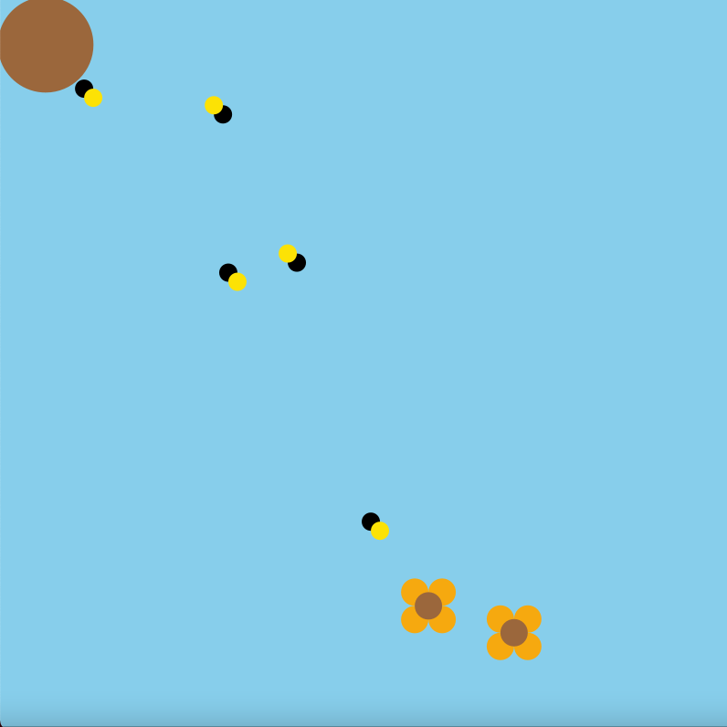
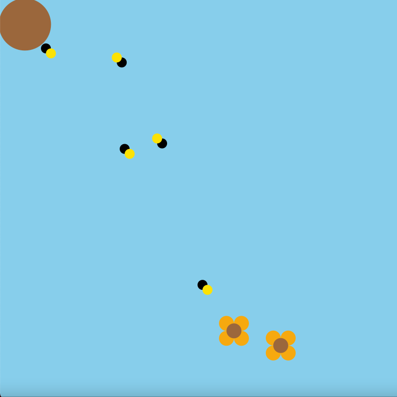

The task of creating a project will always require us to test it through multiple user groups multiple times. Once any one has finished any type of design, the next is to test it out to see what could be improved or fixed to make it better. The whole point is for users to experience a product in the best way possible, without them getting frustrated. When users get frustrated it causes them to want to quit or abandon the product, which would decline the products company significantly. All this allows us to test out many features and combinations that are used to create the best experience for the products we design.
When we as designers create different prototypes it allows for us to test out multiple scenarios. By creating different scenarios, it creates solutions and problems that can become part to the integrated design. Solutions can help to determine how much detail the product can handle while the problems show us exactly what can’t be done. Attacking the design from multiple points of views allows you to implement solutions from one prototype into a separate prototype. This enables a more complete test of features and user interface to take place.
Most teams create implementation prototypes as a means to testing and experimenting with the feasibility of the artifact. This allows the design team to also gain feedback from users on any performance issues, as well as the interaction users have with it. These prototypes are mostly used to discover methods that have adequate specifications for the final artifact to achieve. With more specifications it allows the design team to not have to worry about defining its look or feel and the role it plays for users.
The bee diversity has declined massively over the last couple of years, causing them to be endangered. Our planet simply can not survive without bees and it is up to us to save them. By creating this bee natural system I hope to bring more awareness to the extinction of bees.
In the beginning I had envision incorporating a bee collecting honey from a flower and then taking the honey back to the beehive. Although since then I have incorporated multiple flowers that multiple bees come out of the beehive to collect and bring back to the beehive making it bigger, each time more honey is collected.
The diagram was very helpful in helping me to understand which functions each object would have and how they would all be intertwined which each other.
Through help from online resources, it allowed me to understand different formulas that helped me to do what I needed to complete the bee natural system.
To make the bee natural system more complex I wanted to be able to add more flowers for the bees to catch rather than a set amount. By pressing the space bar you can add as many flowers as the user wants. I also wanted to make it more interesting by creating multiple bees going after the flowers and by pressing the mouse it creates multiple bees that will go and attack the flowers.
For the future, I wanted to create different types of flowers that would also give each bee a different honey count. Possibly making it an interactive game that scores how much honey bees can collect within a certain time limit.
// adds honey when bee brings flower back
void addHoney() {
this.honeyCount++;
this.size += 0.5;}
// caculates distance from bee to flower
double distanceToFlower(Sunflower flower) {
return Math.sqrt((this.position.x - flower.position.x) * (this.position.x -
flower.position.x) + (this.position.y - flower.position.y) * (this.position.y -
flower.position.y));}
// if bee is not busy check distance to flower, go to closest flower and set as new target
if (flowers.size() != 0 && !busy) {
print("seeking\n");
if (target == null) {
Sunflower closest = flowers.get(0);
double closestDist = Double.MAX_VALUE;}}
// checks distance to each flower and finds closest
for (Sunflower flower : flowers) {
double currDist = this.distanceToFlower(flower);
if (currDist <= closestDist && !hive.targets.containsKey(flower)) {
closest = flower;
closestDist = currDist;}}
 
